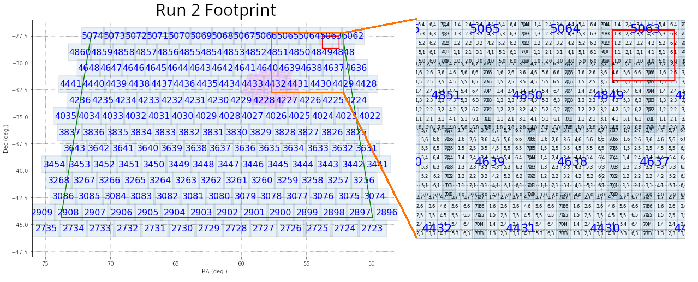

DC2: Generate Postage Stamps (Cutouts) for objects in the Object Catalog#
Owner: Yao-Yuan Mao (@yymao)
Last Verified to Run: 2020-11-30 (by @yymao)
This notebook is partly based on the dm_butler_postage_stamps notebook by Michael Wood-Vasey and the Stack Club ButlerTutorial by Daniel Perrefort.
In this notebook, we will first obtain a list of RA, Dec positions from the Object catalog using GCRCatalogs, and then generate “postage-stamp” cutout images from the coadded images.
Learning Objectives:#
After working through and studying this Notebook you should be able to
Find the corresponding tracts and patches for a given list of RA and Dec
Generate a postage stamp from a coadd for your chosen RA, Dec in a chosen filter, using matplotlib
Obtain cutout images in two different ways (
.getCutout()andbutler.get(bbox=..))Generate false color RGB images
Logistics#
This is intended to be runnable at NERSC through the https://jupyter.nersc.gov interface from a local git clone of LSSTDESC/DC2-analysis in your NERSC directory. But you can also run it wherever, with appropriate adjustment of the ‘repo’ location to point to a place where you have a Butler repo will all of the images.
This notebook uses the desc-stack-weekly-latest kernel. Instructions for setting up the proper DESC python kernel can be found here: https://confluence.slac.stanford.edu/x/o5DVE
Set up#
First we will load the needed modules and DC2 DR6 data sets: object catalogs (with GCRCatalogs) and DRP products (with desc_dc2_dm_data).
# A few common packages
import numpy as np
import matplotlib.pyplot as plt
import pandas as pd
%matplotlib inline
# We will use astropy's WCS and ZScaleInterval for plotting
from astropy.wcs import WCS
from astropy.visualization import ZScaleInterval
# We will use several stack functions
import lsst.geom
import lsst.afw.display as afwDisplay
import lsst.afw.display.rgb as rgb
# And also DESC packages to get the data path
import GCRCatalogs
from GCRCatalogs import GCRQuery
import desc_dc2_dm_data
If you are on a custom kernel (i.e., not using a DESC kernel), and you do have stack installed, but not those DESC packages. You can install them by uncomment and running the following cell.
## Uncomment and run this cell *only if* you are on a custom kernel that has stack installed, but not the DESC packages
#%pip install https://github.com/LSSTDESC/gcr-catalogs/archive/master.zip
#%pip install https://github.com/LSSTDESC/desc-dc2-dm-data/archive/master.zip
sorted(desc_dc2_dm_data.REPOS)
We will be using the DC2 Run 2.2i DR6 WFD data. Read more about this data set here: https://arxiv.org/abs/2010.05926
dc2_data_version = "2.2i_dr6_wfd"
GCRCatalogs.get_available_catalogs(names_only=True, name_contains=dc2_data_version)
cat = GCRCatalogs.load_catalog("dc2_object_run"+dc2_data_version)
butler = desc_dc2_dm_data.get_butler(dc2_data_version)
Get a list of interesting objects#
Here we will find some brightest galaxies in the object catalog to make cutout images for them!
To learn what columns are in the object catalogs, refer to this schema table. And sometimes it’d be helpful to look at the source code.
bright_galaxy_query = GCRQuery(
"clean",
"extendedness == 1",
"mag_r_cModel < 16",
"snr_g_cModel > 10",
"snr_r_cModel > 10",
"snr_i_cModel > 10",
)
columns_to_get = ["objectId", "ra", "dec", "mag_r_cModel", "tract", "patch"]
assert cat.has_quantities(columns_to_get)
# Here we use native_filters to limit to tract == 4639 to save some load time
objects = cat.get_quantities(columns_to_get, filters=bright_galaxy_query, native_filters="tract == 4639")
objects # get_quantities returns an ordinary python dictionary
# make it a pandas data frame for the ease of manipulation
objects = pd.DataFrame(objects)
objects
We see that in the object catalog there’s already tract and patch information.
What are tracts and patches?#
The coadds produced by the DM stack are structured in terms of large tracts and smaller patches, illustrated here for DC2 Run2.2i (left panel), which covers 300 square degrees and has 165 tracts. The right panel shows a zoom-in version of the upper right corner, where you can see the patch structure.

How do I find tract/patch for given RA/Dec?#
What if tract/patch information were not available in the catlaog? We will then need to load the skymap, which stores such information.
skymap = butler.get('deepCoadd_skyMap')
# find tract and patch for the 0th object:
object_this = objects.loc[0]
radec = lsst.geom.SpherePoint(object_this["ra"], object_this["dec"], lsst.geom.degrees)
tractInfo = skymap.findTract(radec)
patchInfo = tractInfo.findPatch(radec)
print("tract =", tractInfo.getId(), "; patch =", patchInfo.getIndex())
Let’s now check the tract/patch values for all objects in our table are indeed consistent with what sky map tells us.
This step is not really necessary. However, if you have a list of RA/Dec but not tract and patch information (for example, if you want to generate postage stamps for a list of galaxies from cosmoDC2), the cell below would be useful!
def get_tract_patch(ra, dec, units=lsst.geom.degrees):
radec = lsst.geom.SpherePoint(ra, dec, units)
tractInfo = skymap.findTract(radec)
patchInfo = tractInfo.findPatch(radec)
return tractInfo.getId(), "{},{}".format(*patchInfo.getIndex())
tract_patch = objects.apply(lambda row: get_tract_patch(row["ra"], row["dec"]), axis=1, result_type='expand') \
.rename(columns={0: "tract", 1: "patch"})
assert (objects["tract"] == tract_patch["tract"]).all()
assert (objects["patch"] == tract_patch["patch"]).all()
tract_patch
Load coadd images using butler#
Once we know the tract and patch, we will be able to load coadd images using butler.
butler.getKeys("deepCoadd")
dataId = {"tract": object_this["tract"], "patch": object_this["patch"], "filter": "i"}
print(dataId)
full_patch = butler.get("deepCoadd", dataId=dataId)
# Let's take a look at the full patch first
fig = plt.figure(figsize=(8, 8), dpi=100)
# Note that we set frame=1 below to allow afwDisplay to use the figure instance we created
display = afwDisplay.Display(1, backend='matplotlib')
display.scale("linear", "zscale")
display.mtv(full_patch.getMaskedImage().getImage())
Make a postage stamp!#
To make a postage stamp, we can simply use the getCutout method to obtain the cutout from the full patch data.
We can also obtain WCS information so that we can show RA/Dec values on teh axes.
Here we will use plain matplotlib to make our postage stamp, because I assume most people are more familar with matplotlib than afw.display!
However, afw.display provides some useful functions and powerful integration with ds9 and others, if you get some time to learn it!
# Define the center and size of our cutout
radec = lsst.geom.SpherePoint(object_this["ra"], object_this["dec"], lsst.geom.degrees)
cutout_size = 300 # 300 pixels -> about 1 arcmin (we'll see why in a bit!)
cutout_extent = lsst.geom.ExtentI(cutout_size, cutout_size)
# Retrieve cutout
cutout = full_patch.getCutout(radec, cutout_extent)
# Retrieve wcs
wcs = cutout.getWcs()
print(wcs)
wcs_fits_meta = wcs.getFitsMetadata()
# Retrieve the image array
image_arr = cutout.getMaskedImage().getImage().array
# make plot with astropy.wcs and matplotlib
fig, ax = plt.subplots(subplot_kw={'projection': WCS(wcs_fits_meta)}, figsize=(4, 4), dpi=100)
vmin, vmax = ZScaleInterval().get_limits(image_arr)
ax.imshow(image_arr, vmin=vmin, vmax=vmax, cmap='binary_r', origin='lower')
ax.set_xlabel("RA")
ax.set_ylabel("Dec")
A different way to load cutout image by specifying a bbox#
center = skymap.findTract(radec).getWcs().skyToPixel(radec)
bbox = lsst.geom.BoxI(lsst.geom.Point2I((center.x - cutout_size*0.5, center.y - cutout_size*0.5)), cutout_extent)
# Note the postfix `_sub` added to the dataset type!! Note how we skip the `full_patch` step here!
cutout = butler.get("deepCoadd_sub", dataId=dataId, bbox=bbox)
wcs_fits_meta = cutout.getWcs().getFitsMetadata()
image_arr = cutout.getMaskedImage().getImage().array
# We should obtain the same image as above!
fig, ax = plt.subplots(subplot_kw={'projection': WCS(wcs_fits_meta)}, figsize=(4, 4), dpi=100)
vmin, vmax = ZScaleInterval().get_limits(image_arr)
ax.imshow(image_arr, vmin=vmin, vmax=vmax, cmap='binary_r', origin='lower')
ax.set_xlabel("RA")
ax.set_ylabel("Dec")
With the bbox method, we can make the loading time shorter (usually 2-3x speed up). This is useful when you need to make many cutouts!
%%timeit
cutout = butler.get("deepCoadd", dataId=dataId).getCutout(radec, cutout_extent)
%%timeit
cutout = butler.get("deepCoadd_sub", dataId=dataId, bbox=bbox)
Make a false color RGB image#
Now we have all the tools to make a false color RGB image. We will need to load in images from three bands. Here we will use g, r, and i bands. We then can use lsst.afw.display.rgb.makeRGB to generate the false color image.
# Note how we directly supply keyword arguments instead of a single dataId dictionary here
# Also note the band ordering. We will use "irg" for "RGB", respectively.
cutouts = [butler.get("deepCoadd_sub", bbox=bbox, tract=object_this["tract"], patch=object_this["patch"], filter=band) for band in "irg"]
wcs_fits_meta = cutouts[0].getWcs().getFitsMetadata()
image_rgb = rgb.makeRGB(*cutouts)
del cutouts # let gc save some memory for us
fig, ax = plt.subplots(subplot_kw={'projection': WCS(wcs_fits_meta)}, figsize=(4, 4), dpi=100)
ax.imshow(image_rgb, origin='lower')
ax.set_xlabel("RA")
ax.set_ylabel("Dec")
Nice image, right? And it appears to be a blended object with a miscentering!
Yay! Let’s put this all together now!#
This final cell is going to take a bit longer (about 50-60 seconds)
fig = plt.figure(figsize=(16, 16), dpi=100)
gs = plt.GridSpec(4, 4, fig)
cutout_size = 300
cutout_extent = lsst.geom.ExtentI(cutout_size, cutout_size)
for (_, object_this), gs_this in zip(objects.iterrows(), gs):
radec = lsst.geom.SpherePoint(object_this["ra"], object_this["dec"], lsst.geom.degrees)
center = skymap.findTract(radec).getWcs().skyToPixel(radec)
bbox = lsst.geom.BoxI(lsst.geom.Point2I((center.x - cutout_size*0.5, center.y - cutout_size*0.5)), cutout_extent)
cutouts = [butler.get("deepCoadd_sub", bbox=bbox, tract=object_this["tract"], patch=object_this["patch"], filter=band) for band in "irg"]
wcs_fits_meta = cutouts[0].getWcs().getFitsMetadata()
image_rgb = rgb.makeRGB(*cutouts)
del cutouts # let gc save some memory for us
ax = plt.subplot(gs_this, projection=WCS(wcs_fits_meta), label=str(object_this["objectId"]))
ax.imshow(image_rgb, origin='lower')
del image_rgb # let gc save some memory for us
for c in ax.coords:
c.set_ticklabel(exclude_overlapping=True, size=10)
c.set_axislabel('', size=0)